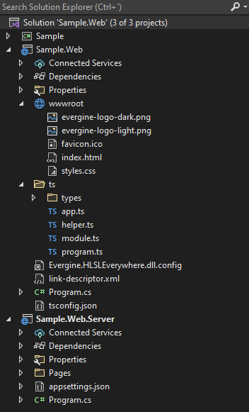

Build, debug and publish a web application

A web profile produces two kinds of output: a static client (the WebAssembly runtime, your assemblies, the exported assets and the page) and, optionally, an ASP.NET Core server that hosts it. This page shows how to build and run both during development, how to debug the C# code in the browser, and how to publish, with an explanation of every setting the templates put in the project files.
The commands use the HTML5 template with a project named MyProject: the client is MyProject.Web and the server MyProject.Web.Server. For the React template, the client is MyProject.WebReact and the server MyProject.Host.
Build
Build the client project. The server project references it, so building the server builds both.
dotnet build -c Debug .\MyProject.Web\MyProject.Web.csproj
dotnet build -c Release .\MyProject.Web.Server\MyProject.Web.Server.csproj
Each build of the client also exports the project assets for the web profile (shaders compiled, textures converted) and regenerates assets.js.
Run
From Visual Studio 2026, set MyProject.Web.Server or MyProject.Web as the startup project and press F5. Both launch profiles open the browser at https://localhost:5001 (and http://localhost:5000). Each project also has an IIS Express profile, which is usually slower.
From a terminal:
dotnet run --project .\MyProject.Web.Server\MyProject.Web.Server.csproj
Running the client project alone uses the Blazor development server. That is enough while you work on the scene; use the server project to check compression and production behavior.
Tip
Opening index.html from disk does not work: the browser blocks the file:// requests for the WebAssembly files and the assets. Always serve the files over HTTP.
Debug
The launch profiles include the Blazor debugging proxy (inspectUri), so you can set breakpoints in your C# code and hit them while the app runs in the browser. Debug from Visual Studio with a Chromium-based browser (Microsoft Edge or Google Chrome) selected as the target. See Debug ASP.NET Core Blazor apps for the options and limitations.
For TypeScript, tsconfig.json compiles ts/ into wwwroot/evergine.js; use the browser developer tools to step through it. Program.Run sends Trace output to Console.Out, so engine traces appear in the browser console.
Publish
Static files only
Publish the client to get a folder you can copy to any static web host:
dotnet publish -c Release .\MyProject.Web\MyProject.Web.csproj
The site is in MyProject.Web\bin\Release\net10.0\publish\wwwroot. The host must:
- Serve the Evergine asset extensions (
.weptx,.wepsn,.wepsc,.wepsp,.weprl,.weprp,.weppp,.wepmd,.wepmt,.wepfb,.wepfx,.wepprf) asapplication/octet-stream. Many hosts refuse to serve unknown extensions. - Serve the precompressed
.brand.gzfiles that the Release publish produces, if you want compressed downloads. See Host and deploy Blazor WebAssembly for configurations for common hosts.
With the ASP.NET Core server
Publish the server project to get a host that already does both:
dotnet publish -c Release .\MyProject.Web.Server\MyProject.Web.Server.csproj
Add a runtime identifier to publish a self-contained server that does not need .NET installed on the machine, for example -r win-x64 --self-contained. The output folder is MyProject.Web.Server\bin\Release\net10.0\publish (with the runtime identifier in the path when you use one).
The server's Program.cs is what makes it production ready:
using Microsoft.AspNetCore.ResponseCompression;
using Microsoft.AspNetCore.StaticFiles;
var builder = WebApplication.CreateBuilder(args);
builder.Services.AddRazorPages();
builder.Services.AddServerSideBlazor();
// Compress responses, including the binary Evergine assets, also over HTTPS.
builder.Services.AddResponseCompression(options =>
{
options.EnableForHttps = true;
options.MimeTypes = ResponseCompressionDefaults.MimeTypes.Concat(
new[] { "application/octet-stream" });
});
var app = builder.Build();
if (!app.Environment.IsDevelopment())
{
app.UseExceptionHandler("/Error");
app.UseHsts();
}
else
{
app.UseDeveloperExceptionPage();
app.UseWebAssemblyDebugging();
}
app.UseHttpsRedirection();
app.UseResponseCompression();
// Serve the Blazor client files under _framework.
app.UseBlazorFrameworkFiles();
// Map every Evergine asset extension to application/octet-stream.
var contentTypeProvider = new FileExtensionContentTypeProvider();
var evergineExtensions = new[] { ".weptx", ".wepsn", ".wepsc", ".wepsp", ".weprl", ".weprp", ".weppp", ".wepmd", ".wepmt", ".wepfb", ".wepfx", ".wepprf" };
foreach (var evergineExtension in evergineExtensions)
{
contentTypeProvider.Mappings.Add(evergineExtension, "application/octet-stream");
}
app.UseStaticFiles(new StaticFileOptions
{
ServeUnknownFileTypes = true,
ContentTypeProvider = contentTypeProvider
});
app.UseRouting();
app.MapRazorPages();
app.MapFallbackToFile("index.html");
app.Run();
The React template's MyProject.Host does the same without Razor Pages: response compression with application/octet-stream, the same extension mappings, static files and a fallback to index.html. Its project sets EnableDefaultCompressionFormats to false.
Client project settings
These are the properties the templates set in the client project (MyProject.Web.csproj or MyProject.WebReact.csproj):
| Property | Debug | Release | What it does |
|---|---|---|---|
PublishTrimmed |
false |
true |
Removes unused code from the published assemblies. Evergine.Targets.Web also sets it to true when the project leaves it empty. |
TrimmerRootDescriptor |
link-descriptor.xml |
link-descriptor.xml |
Lists the types the trimmer must keep. See Tips. |
BlazorEnableCompression |
false |
Not set (Blazor default, true) |
Produces precompressed Brotli (.br) and Gzip (.gz) copies of the published files. Disabled in Debug to keep builds fast. |
RunAOTCompilation |
Commented out | Commented out | Compiles .NET code to WebAssembly ahead of time on publish. See Tips. |
DefineConstants |
WASM |
WASM |
Lets shared code use #if WASM for web-only paths. |
GenerateEvergineContent |
False |
False |
The shared application project already generates the EvergineContent class with the asset IDs, so the launcher does not generate a second one. |
GenerateEvergineAssets |
True |
True |
Exports the project assets for this profile during the build. |
WasmAllowUndefinedSymbols |
True |
True |
Lets the WebAssembly native link finish when native libraries reference symbols that are not defined at link time. |
WasmEnableHotReload |
false |
React template only. Disables .NET hot reload for the WebAssembly project. |
Serve the app from a subfolder
assets.js requests every asset with an absolute URL that starts at the site root (/Content/...). To host the app under a path such as https://example.com/viewer/, set the prefix in the client project:
<PropertyGroup>
<EvergineWebAssetsOverrideUrlPrefix>true</EvergineWebAssetsOverrideUrlPrefix>
<EvergineWebAssetsUrlPrefix>/viewer/</EvergineWebAssetsUrlPrefix>
</PropertyGroup>
You also need to configure the Blazor base path for the rest of the files; see Host and deploy Blazor WebAssembly.